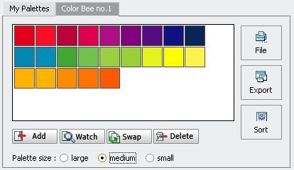
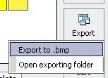
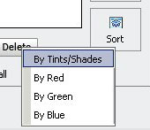

| 
|
| Here, you make your palette.
|
Features:
:. Add -
Add selected color into your palette. The added color will be shown in the end of your palette.
|
:. Watch -
Select a color on your palette, and see its value.
|
:. Swap -
Swap the selected color on your palette with the new color in the View color panel.
|
:. Delete -
Delete a selected color on your palette.
|
:. Palette size -
Adjust the size of color swatches on your palette.
|
:. Export -
Export your palette to a Bitmap image. You can take it into any design program you use and sample colors from it.
|
:. Sort -
Simply organize colors on your palette. When colors are sorted by red, your palette will display colors in the order of red value; when colors are sorted by green, your palette will display colors in the order of green value; when you sort colors by blue, your palette will display colors in the order of blue value.
|